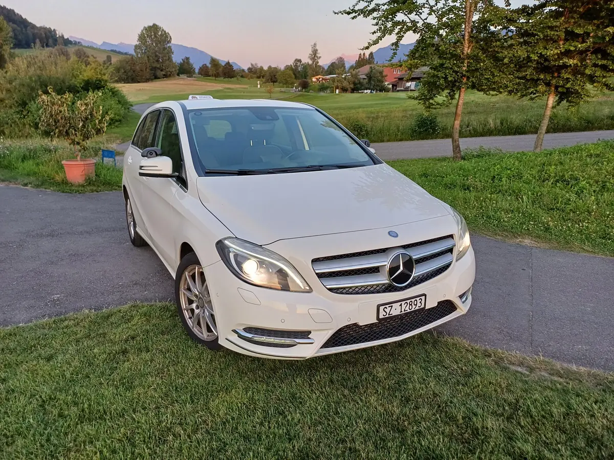
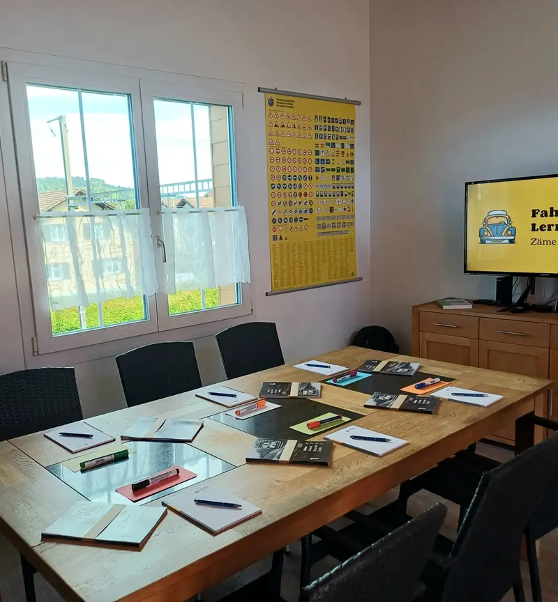
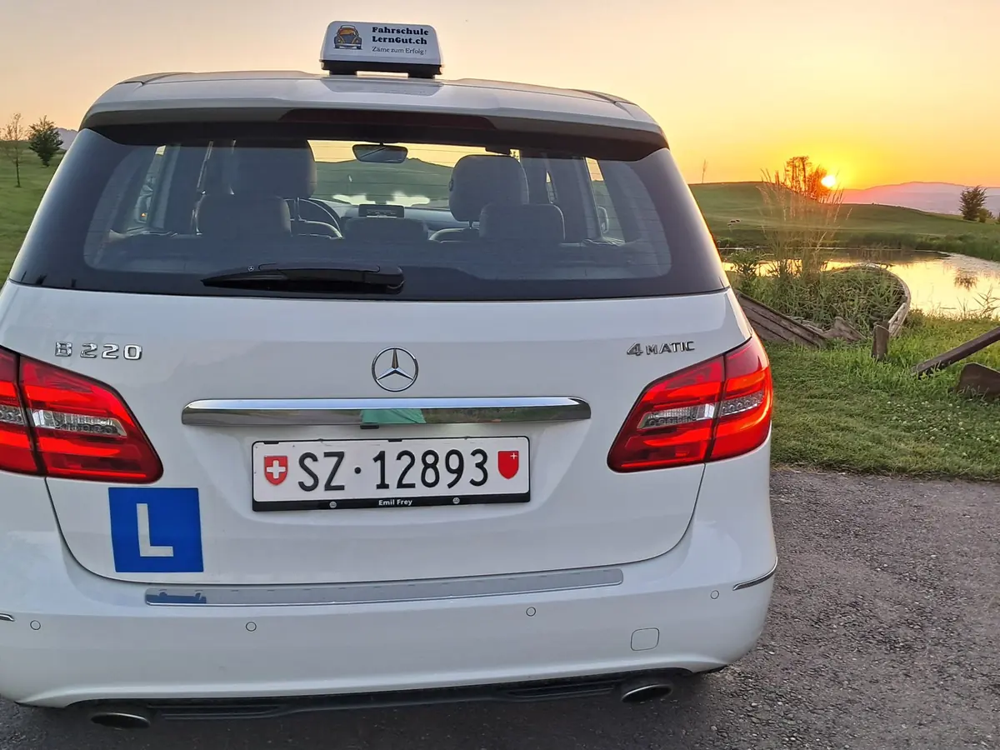

Fahrschule Kat. B mit Automat
Fahren lernen in Siebnen.
Einfach, sicher und schnell zur Fahrprüfung. Urs Giger begleitet dich persönlich, im Automaten mit Allrad und mit Treffpunkt nach Absprache.
Oder schreib mir per WhatsApp
Schnupper-Fahrstunde
CHF 59.–
60 Minuten zum Kennenlernen
- Automat mit AllradMercedes-Benz B220 4matic
- Online buchenFreie Termine sofort sehen
- Eigenes KurslokalTheorie und VKU in Siebnen
- Bar, Karte oder TwintKarte und Twint mit Zuschlag
Angebot
Alles für deinen Führerausweis
Fahrstunden, Verkehrskunde und Prüfungsbegleitung aus einer Hand. Persönlich, mit einem Fahrlehrer, der dich kennt.
Kategorie B, Automat
Fahrstunden
Einzelstunde mit 45 oder Doppelstunde mit 90 Minuten. Treffpunkt nach Absprache, auch in Zürich beim Bahnhof Enge.
- Termine direkt online buchen
- 5er- und 10er-Abo
VKU in Siebnen
Der Verkehrskundeunterricht findet im eigenen Kurslokal an der Kreuzstrasse 14 statt. Getränke und Snacks stehen bereit.
- 4 Teile, vom Verkehrssehen bis zur Taktik
- CHF 240.–, bar oder mit Twint
Prüfungsbegleitung
Wir treffen uns eine Stunde vor dem Termin zum Einfahren. Das Ziel: dir die Nervosität nehmen. Danach gehts zur Prüfung.
- Pfäffikon SZ und Zürich-Albisgütli
- Einfahren und Prüfung, total 2 Stunden
Beginner-Aktion
Schnupper-Fahrstunde zum Kennenlernen
60 Minuten im Fahrschulauto: Stimmt die Chemie zwischen uns, passt das Auto? Die Aktion gilt einmal pro Fahrschüler.
CHF 59.–
bei Barzahlung, mit Karte oder Twint CHF 60.–
Schnupperstunde buchen
Neu ab 1. Januar 2027
In 5 Schritten zum Führerausweis
- 1
Gesuch einreichen
Identität prüfen lassen und die FABER-PIN beantragen.
- 2
Nothilfe, Sehtest, VKU
Neu besuchst du den VKU schon vor der Theorieprüfung.
- 3
Theorieprüfung
Bestanden? Dann gibts den Lernfahrausweis.
- 4
Fahrstunden
Fahrpraxis sammeln, mit Urs im Automaten.
Praktische Prüfung
Danach erhältst du den Führerausweis auf Probe.
Danach folgen 3 Jahre Probezeit, im ersten Jahr mit dem WAB-Kurs.

Theorie und VKU
Lernen im eigenen Kurslokal
Theorielektionen und der Verkehrskundeunterricht finden im Fahrschullokal in Siebnen statt. Im VKU behandeln wir vier Schwerpunkte:
- 1VerkehrssehenBlickführung, Reize und Reaktionen
- 2VerkehrsumweltPartnerkunde, Strassen und Tunnel
- 3VerkehrsdynamikKräfte, Energie und Sicherheit
- 4VerkehrstaktikECO-Drive und sicheres Fahren
Preise
Preise auf einen Blick
Einzel-Fahrstunde
CHF 90.–
45 Minuten, Automat
Doppel-Fahrstunde
CHF 170.–
90 Minuten am Stück
Verkehrskunde VKU
CHF 240.–
zahlbar am ersten Kurstag
- 5er-Abo FahrstundenCHF 430.–
- 10er-Abo FahrstundenCHF 840.–
- Theorielektion, 45 MinutenCHF 80.–
- Führerprüfung mit Einfahren, total 2 StundenCHF 220.–
- Administrationspauschale und Versicherung, einmalig ab der 2. FahrstundeCHF 120.–
Bezahlen kannst du bar, mit Karte oder mit Twint. Bei Karte und Twint kommt ein Zuschlag dazu, eine Rechnung ist nicht möglich.
Über mich
Dein Fahrlehrer Urs Giger
Ich lebe seit 1991 in Siebnen, bin verheiratet und habe zwei erwachsene Kinder. 2025 habe ich hier meine eigene Fahrschule eröffnet.
- Fahrlehrer Kat. B mit eidgenössischem Fachausweis
- Fahrer auf Taxis, Schulbussen und bei VIP-Transporten
- 4½ Jahre beim Blutspendedienst Zürich, 2½ Jahre auf Ambulanzen und im Organtransport
- 28 Jahre in der IT, vor allem im Support und in der Schulung
Mehr über mich
Mitglied von

Mercedes-Benz B220 4matic
Dein Fahrschulauto: 7-Gang-Automat und Allrad, also auch auf Schnee sicher.
Zum FahrzeugAuch für Erfahrene
Mehr als nur Fahrstunden
Auch wer den Ausweis schon hat, ist bei mir richtig. Bei Fragen einfach anrufen oder per WhatsApp schreiben.
Kontrollfahrten
Prüfungsfahrt für den Tausch eines ausländischen Führerausweises.
Für Senioren
Auffrischung, neue Gesetze und die Fahrassistenten im eigenen Auto erklärt.
Fahrängste
Hilfe bei Tunnel, Autobahn oder Kreisverkehr.
Nach einem Unfall
Unterstützung, um Ängste nach einem Verkehrsunfall zu verarbeiten.
Parkieren
Gezielte Auffrischung beim Parkieren.
Theorie oder Praxis
Wissen auffrischen oder ganz nach deinen persönlichen Wünschen.
Bereit für deine erste Fahrstunde?
Freie Termine siehst du direkt online. Lieber persönlich? Ruf an oder schreib per WhatsApp.
Schick mir vor dem ersten Termin eine Kopie deines Lernfahrausweises, per WhatsApp oder per Mail.